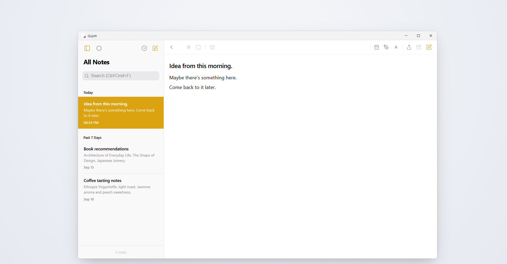
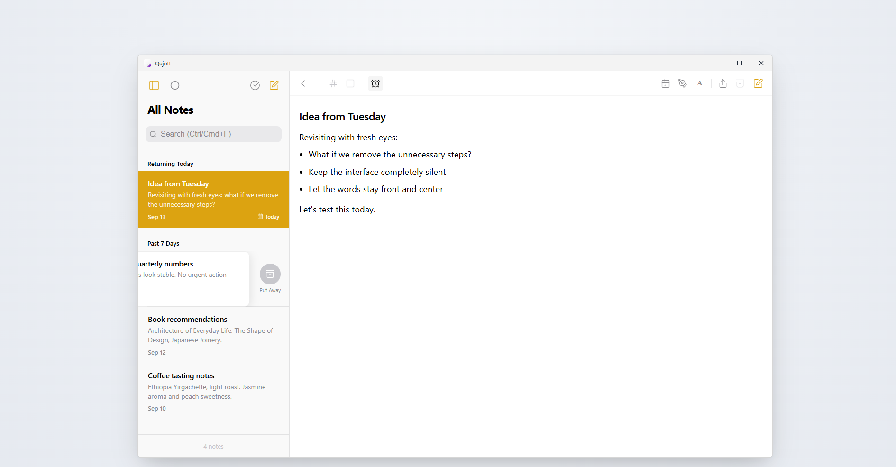
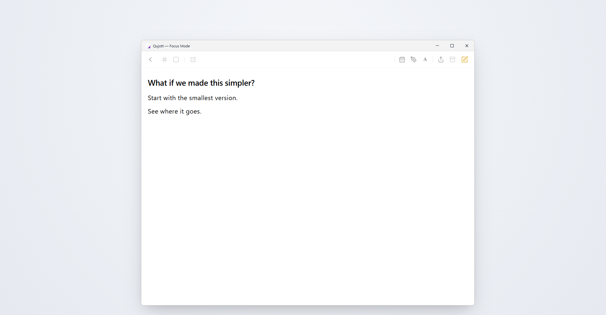
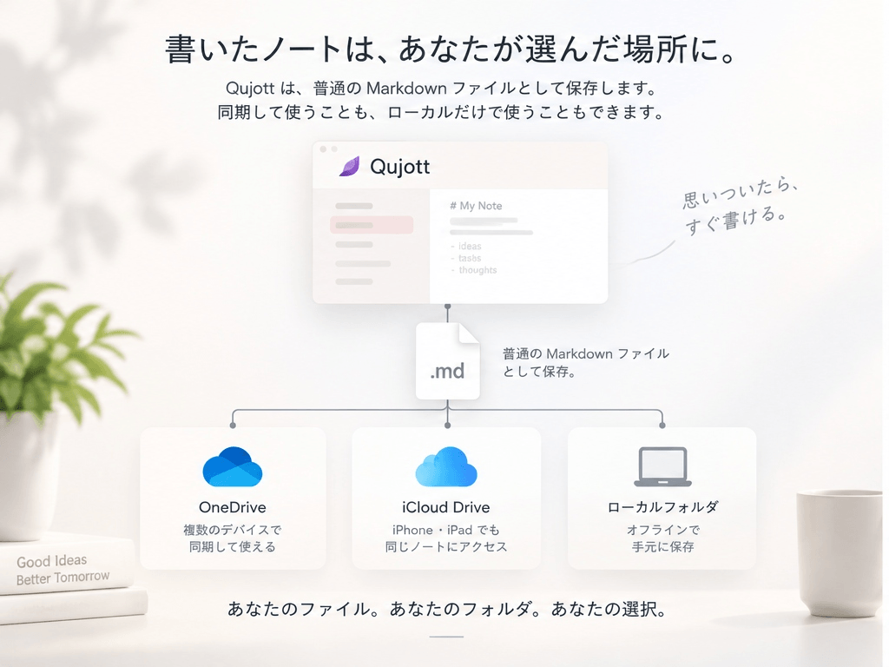
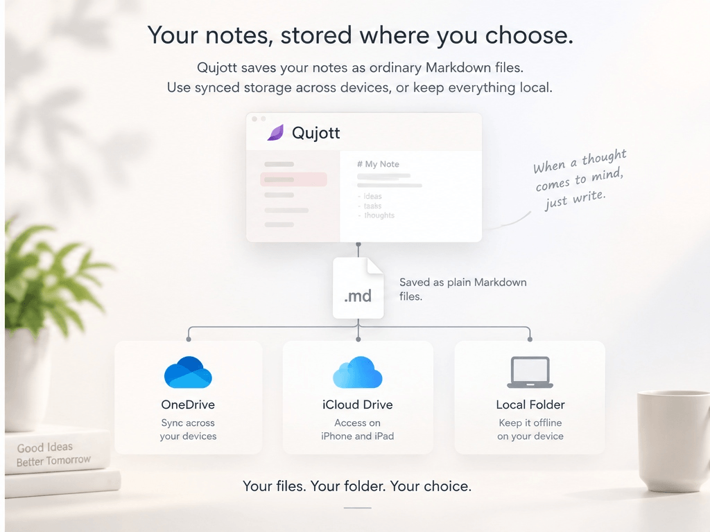
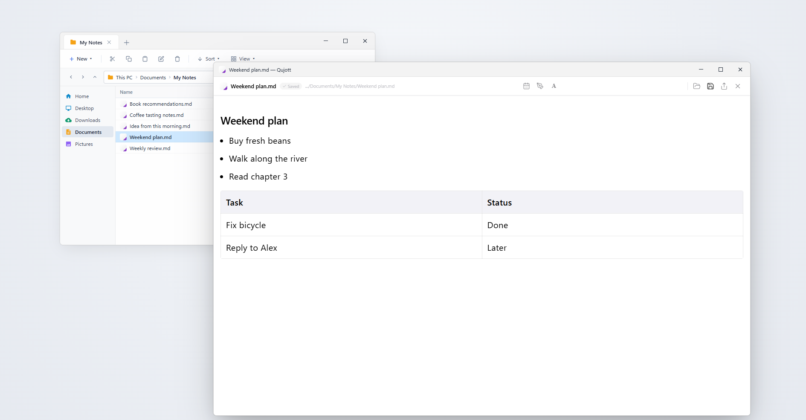
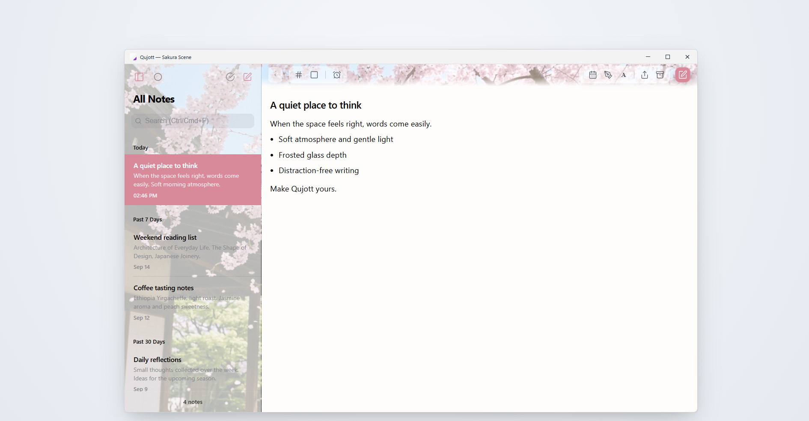

Qujott
思いついたら、すぐ書ける。
When a thought comes to mind,
just write.
思いついた瞬間の入力体験にこだわった、軽量なMarkdownノートアプリ。
机の横に置いてある紙のメモ帳のように、余計な準備も事前の整理も必要ありません。
A lightweight Markdown note app built for effortless capture.
Like a physical notepad resting beside your keyboard, it requires no setup and no upfront organization.

迷わず書き始められる、端正で静かな2ペイン入力空間 A calm, distraction-free two-pane space built for effortless capture
机の横の紙のメモ帳のように、すぐ書けること。 Like a paper notepad resting beside your desk.
Qujottは、タスク管理や巨大な知識ベースを作るためのツールではありません。
机の横に置いてある紙のメモ帳のように、思いついたその瞬間に迷わず書き始められることだけにこだわりました。
フォルダ分けを最初に考える必要も、タグ付けを強制されることもありません。
頭に浮かんだ言葉をそのまま書き留め、すぐそばに置いておく。整理はあとでいいのです。
Qujott is not a task manager or an overwhelming knowledge database.
Like a paper notepad resting beside your keyboard, it is designed for one thing: letting you start writing the instant an idea arrives.
No folder hierarchies to navigate. No mandatory tags to file.
Capture your thoughts first and keep them close. Organization can wait.
書く、しまう、再会する Write, Put Away, Revisit
日常の思考を淀みなく循環させる、3つのシンプルな仕組み A natural cycle designed to keep your thoughts close and your mind clear
Immediate Capture
すぐ書く Frictionless Capture
アプリを開いた瞬間から迷わず書き始められます。思考が消えてしまう前に、そのまま言葉へ。 Start typing the instant you open the app. Zero friction between thought and text before ideas fade away.
Put Away
いったん、しまう Tuck Away
書き終わったメモは、削除するのではなく視界からそっと「しまい」ます。手元をすっきりと保てます。 Done with a note? Gently tuck it away without deleting it. Keep your view clean while preserving every thought.
Revisit
静かに再会する Quiet Reunion
今日、明日、来週など、必要なタイミングで静かに再浮上。うるさい通知やアラームで急かすことはありません。 Resurface notes today, tomorrow, or next week. No noisy alarms or red badges—just a natural reunion when the timing is right.

「再会した思考（Returning Today）」と、左スワイプによる「しまう（Put Away）」の連動 Resurfacing thoughts quietly at the top, and tucking away finished notes with a gentle swipe
書くことだけに没頭できるエディタ Built for Focused Writing
日常のメモに必要なMarkdown記法と、思考に潜るためのFocus Mode Essential Markdown support and display modes tailored for concentration
見出し、チェックリスト、表（テーブル）、引用など、日常のメモに必要なMarkdown記法にしっかり対応しています。
ワンクリックで1ペインの「Focus Mode」に切り替えれば、サイドバーもリストも消え、思考と文字だけの静寂な空間が広がります。
Full support for essential Markdown: headings, checklists, tables, blockquotes, and links.
Switch to single-pane Focus Mode anytime to gently hide the sidebar and memo list, creating a quiet sanctuary dedicated purely to writing.

余計な視覚的ノイズを削ぎ落とし、中央にゆったりと思考を広げるFocus Mode Distraction-free Focus Mode keeps your thoughts front and center
書いたノートは、あなたが選んだ場所に。 Your notes, stored where you choose.
普通のMarkdownファイルとして保存。同期して使うことも、ローカルだけで使うこともできます。 Qujott saves your notes as ordinary Markdown files. Use synced storage across devices, or keep everything local.


Ordinary Markdown Files
Qujottで書いたメモは、普通の .md ファイルとして保存されます。独自形式への囲い込みはなく、Obsidianや他のMarkdownエディタからもそのまま開いて編集できます。
Qujott saves your notes as ordinary Markdown (.md) files. With zero proprietary lock-in, open and edit them seamlessly in Obsidian or your favorite text editor.
Shared Folder
ノートは、あなたが選んだフォルダに保存できます。OneDriveやiCloud Driveなど、同期可能なフォルダを使えば、複数のデバイスやOSから同じMarkdownファイルを扱えます。もちろん、同期せずローカルだけで使うこともできます。 Store your notes in a folder of your choice. Use synced folders such as OneDrive or iCloud Drive to work with the same Markdown files across devices and operating systems. Or keep everything entirely local and offline.

普通のエクスプローラーで扱えるプレーンなMarkdownファイル。他のツールからもそのまま開けます Stored as standard Markdown files in your local folder—openable anytime with any editor
Make Qujott yours.
自分好みの佇まいに仕立てる Personalize your writing environment
Qujott Free は、思いついた瞬間のメモ作成、Markdown編集、Focus Mode、Put Away、Revisit、Shared Folder、ローカル保存など、Qujottの本質的な体験をすべて無料で提供します。広告もサブスクリプションもありません。
Qujott Pro（US $4.99 / 買い切り） は、毎日使う道具を自分好みの空間に仕立てるための外観・雰囲気のカスタマイズです。
桜（Sakura）などのAtmosphere Sceneやすりガラス効果、Paperテーマなど、気分や部屋の明かりに合わせた佇まいを選べます。機能を制限して買わせるためではなく、「自分のQujottにしたい」と感じたときにお選びいただけるProです。
Qujott Free provides all core experiences—Immediate Capture, Focus Mode, Put Away, Revisit, Markdown editor, Plain Markdown, Shared Folder, and local-first offline storage. Completely free with no ads and no subscriptions.
Qujott Pro (US $4.99 / One-Time Purchase) is an aesthetic personalization option to style your daily jotter to your taste.
Personalize your environment with frosted glass Atmosphere Scenes (such as Sakura), wallpaper, and tactile paper themes. Not an artificial paywall on writing features, but an invitation to make Qujott truly yours.

満開の桜とすりガラス効果を取り入れた、上質なAtmosphere Scene（Sakura） Immersive Atmosphere Scenes with frosted glass depth and calming visuals